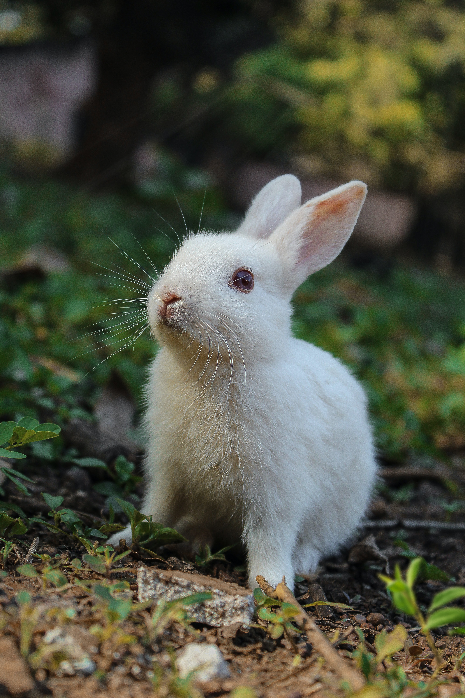

- HTML
- CSS
- JavaScript
장주노의 코딩 공부 시작
배토는 검은 털 토끼이며, 영어로는 'Baeto'라고 부른다. 배토는 너무 귀엽다.
모찌는 하얀 털 토끼이며, 영아로는 'mozzi'라고 부른다. 모찌는 너무 이쁘다
절미는 갈색 털 토끼이며, 영어로는 'jurlmy'라고 부른다. 절미는 너무 바보다
집토끼와 산토끼는 상당히 다르게 생겼다. 집토끼는 우리가 흔히 떠올리는 동글동글하고 짧은 다리에 눈동자가 커서 순하고 귀여운 생김새인 반면, 산토끼는 대체로 귀가 훨씬 크고 몸에 비해 머리가 작은 편이며 얼굴이 길쭉하고 다리가 집토끼보다 훨씬 길어 적을 만났을 때 재빨리 도망치기에 적합한 모양새를 하고 있고, 동공크기도 집토끼보다 작다. 때문에 한참 어린 새끼 때를 제외하면 우리가 흔히 토끼 하면 떠올리는 모습과는 상당한 괴리감을 느낄 수 있다.
